Notre-Dame-de-Monts, Atout-Vent 2008

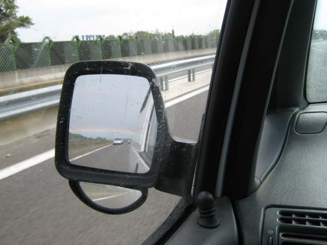
Départ vendredi, j'arrive à Notre-Dame-de-Monts, la pluie est derrière moi comme en témoigne le magnifique arc-en-ciel dans mon rétro, ouf !

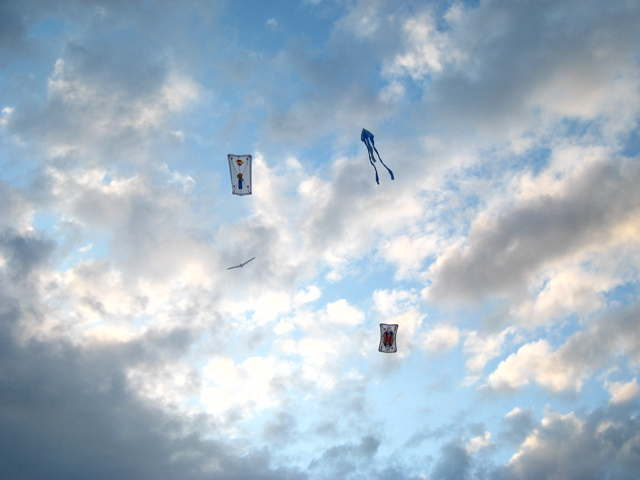
Ca commençait aujourd'hui, je suis en retard, je ne suis pas le seul, mais il n'est jamais trop tard pour voler, je lance l'Albatros avec des cartes et le Pyrodelta de Jean-Marc...

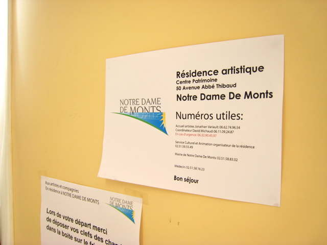
Dîner au restaurant sur la plage, puis on rejoint la résidence "Le Patrimoine", résidence artistique...

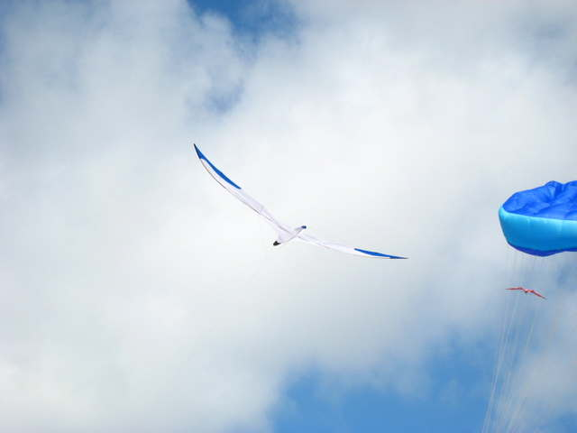
Samedi matin, du vent (moins que dimanche, mais déjà pas mal...). Je relance l'Albatros, il faudra que je fasse d'autres CVs pour vent fort...

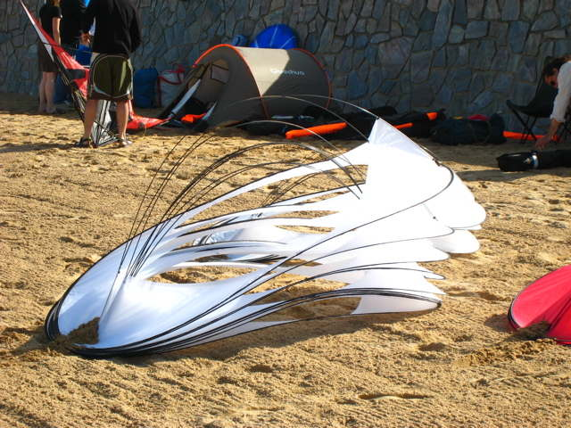
Zézé apporte un tas, c'est le cas de le dire, de ses cerfs-volants blancs et de poissons rouges bâtis sur le même principe...

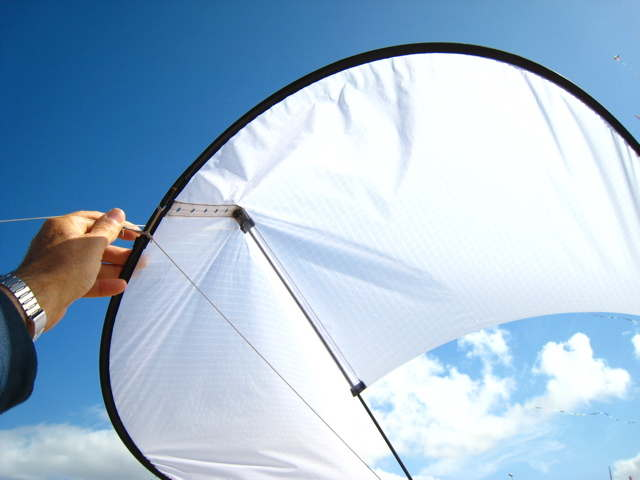
Le principe, donc : un jonc autour, un tube souple dessous avec une butée : l'avant du tube peut se mettre dans un des trous et la butée coulisser pour régler la courbure...

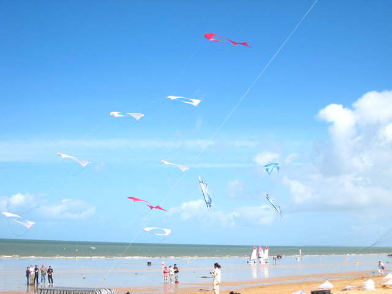
Zézé les monte en une espèce d'arche triangulaire du plus bel effet ! Derrière, les Flics s'entraînent... et les chars de l'école tournent sans arrêt !

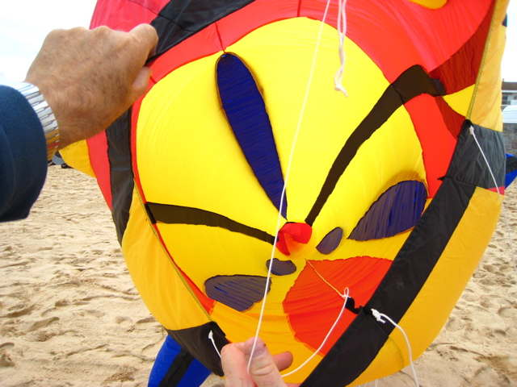
Quoi-t-est-ce ? Un poisson de 4 m de long vu de l'intérieur. Les tâches sombres sont les bases des nageoires, avec des fentes pour que celles-ci se gonflent bien !

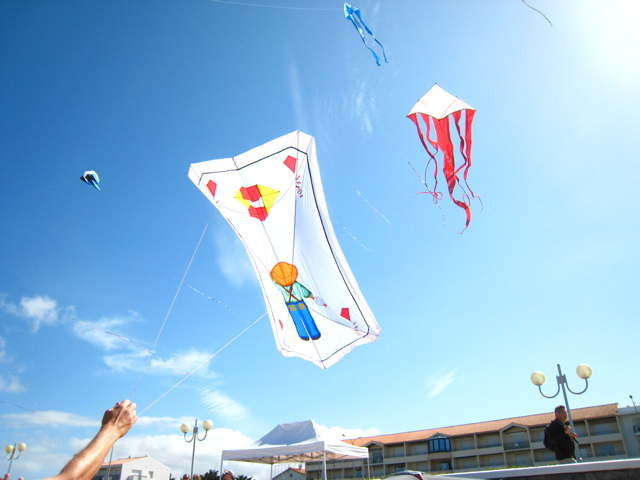
Yannick fait voler sa carte, finie trop tard pour Hirel, avec un petit cervoliste attendrissant qui tient un Madiot-CVCF.

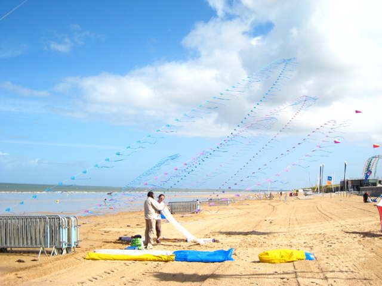
Un paquet d'arches se sont montées (pas toutes seules !). Et au sol, Daniel a amené de grands sacs mystérieux...

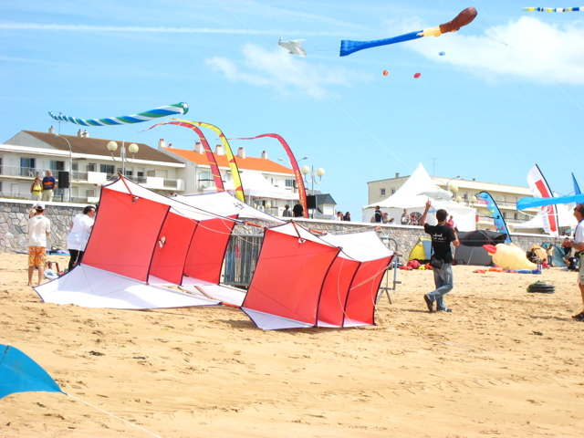
Et voilà les engins, de petits Saconney de... 5 m d'envergure, 3 m 50 de long ! Pour un peu, on ferait de l'ascension humaine !

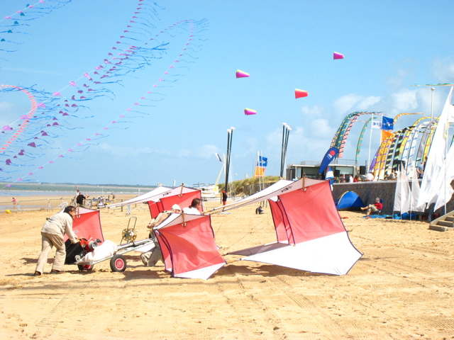
Ah, mais maintenant, il y en a deux, ça se précise... Et un treuil motorisé arrive sur son chariot... poussé et tiré à bras d'hommes !

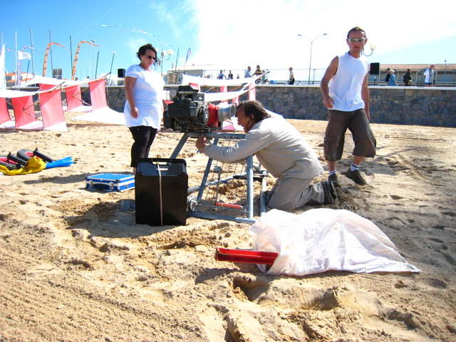
Daniel met la dernière main au chariot du treuil qui se déplie et se fixe avec les petits piquets rouges au premier plan !

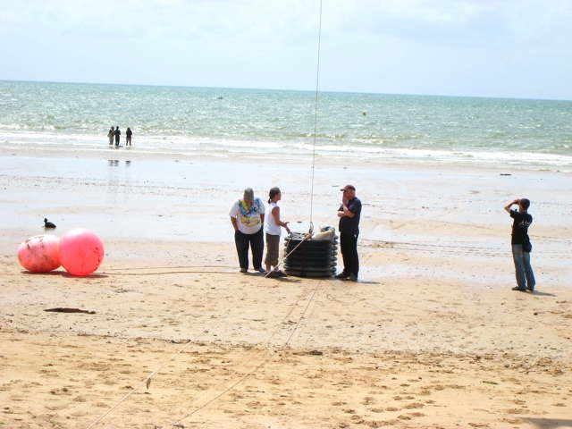
Du treuil part la ligne, renvoyée vers le haut par une poulie fixe. Avantage : si le vent change, le treuil n'a pas à bouger...

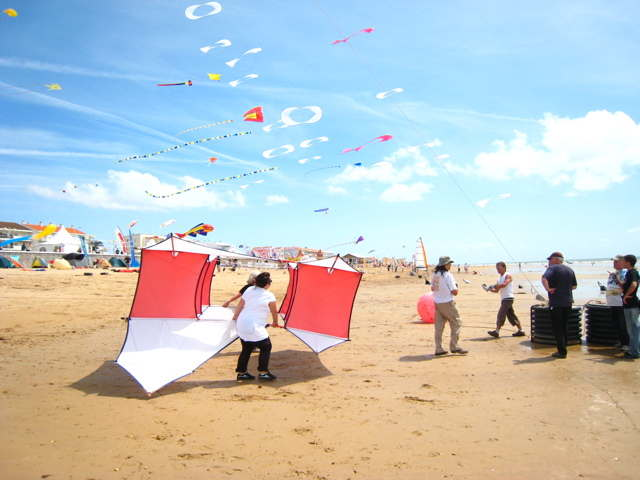
On amène un Saconney supplémentaire, ils ont tous été montés auparavant !

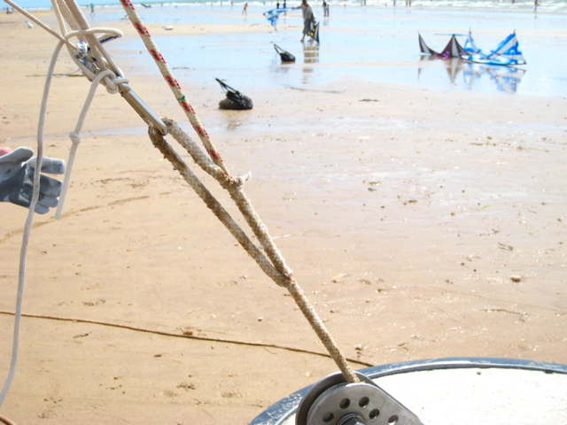
La bride est attachée par un mousqueton solide à cette anse formée par un bout de corde dans l'âme duquel la ligne est enfilée : il se serre irrémissiblement dès qu'on tire !

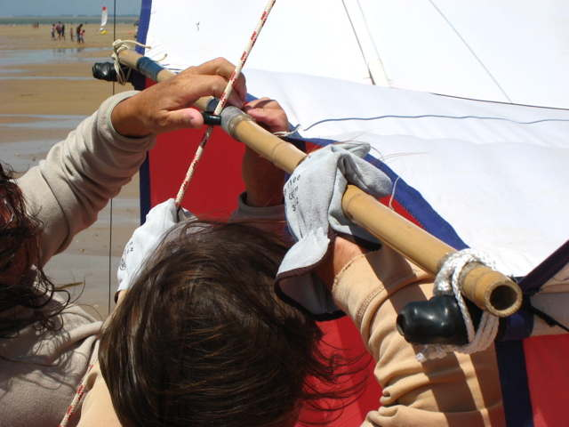
Pour guider le CV et ne pas raguer sur la ligne, une vergue transversale est ajoutée à l'avant du Saconney et un passant est boulonné (!) à cheval sur la ligne !

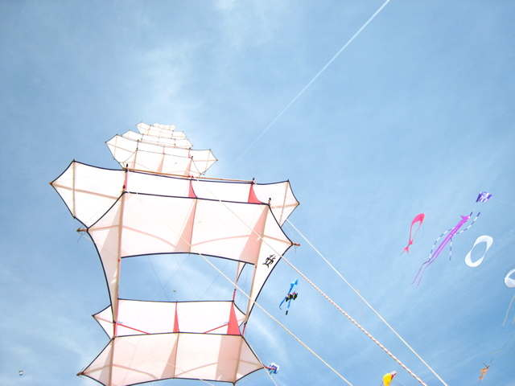
Ca y est, le train est formé et monté à mesure de son essor ! Tout ceci ne peut évidemment s'improviser et résulte d'une longue réflexion et expérience !

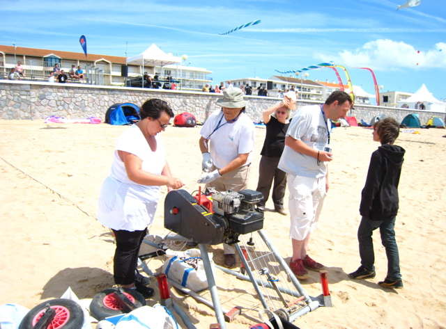
Pour monter, c'est facile, il suffit de relâcher la ligne enroulée sur le cabestan. Daniel s'en charge toujours, il a mis les gants pour la circonstance ! Le seul problème au départ est de soigner le passage des anses sur le cabestan et les poulies, car si ça bloque, il faudra ramener à la main !

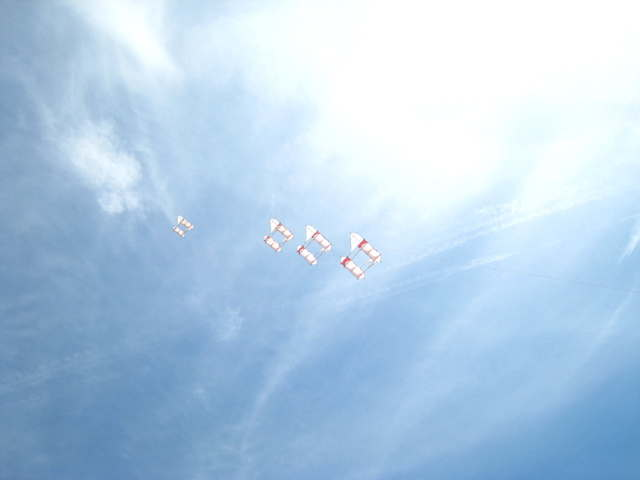
Bon, on monte un peu le train pour qu'il soit plus stable... et on fait un petit essai d'ascension avec un volontaire de l'équipe : tout se passe bien !

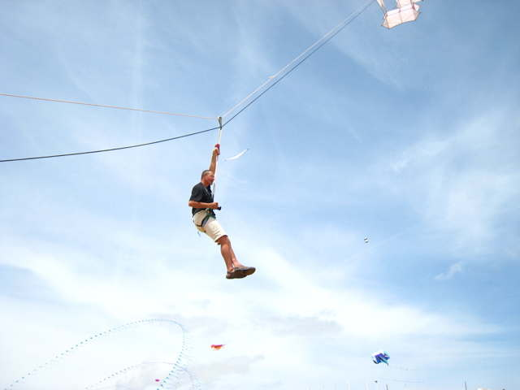
Alors Jean-Marc se précipite pour être le premier à voir le festival d'en haut ! Et c'est parti !

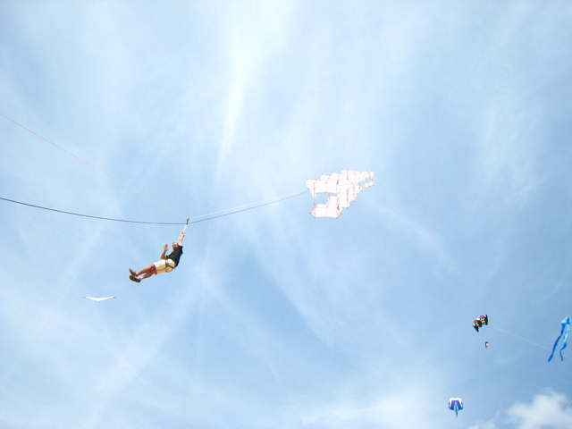
Bon, on monte encore, Jean-Marc n'a pas l'air d'avoir envie de redescendre ! Mais d'autres attendent, comme l'Impossible Julie qui s'enverra aussi en l'air !

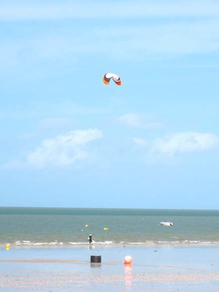
Pendant ce temps, Renaud a abandonné le char à CV pour s'initier au Kite-Surf. Mais il a pris une voile un peu petite qui le sort mal de l'eau... Enfin, pour un début, c'est pas mal !

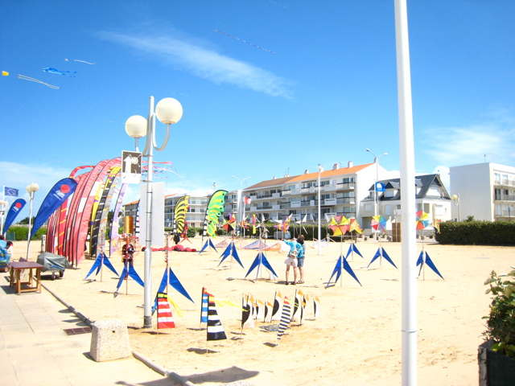
Sur la promenade, la scène en béton a été rasée et a fait de la place pour les JdVs ! Il y a tous les habitués de la discipline...

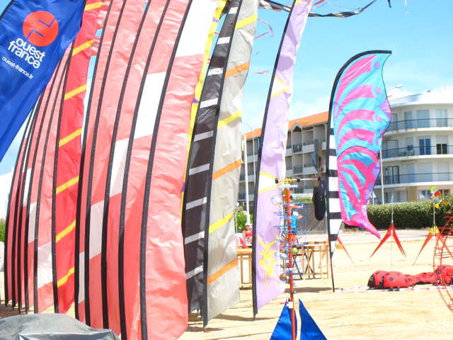
Il y a aussi un ensemble de nombreuses bannières (de Michel Boucard en bonne partie) qui forment un massif impressionnant et esthétique...

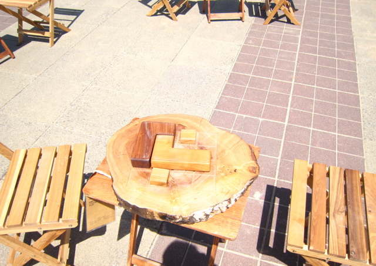
Sur la promenade, un ensemble de jeux en bois réalisés avec amour par un artiste passionné et joueur !

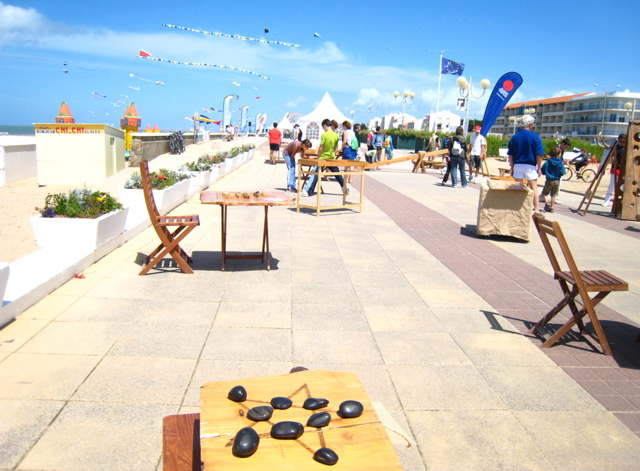
Tous ont leurs règles exposées et on peut y jouer sans courant, sans ordinateur, sans abonnement et sans raccordement Internet ! Alors il n'y a pas trop de monde...

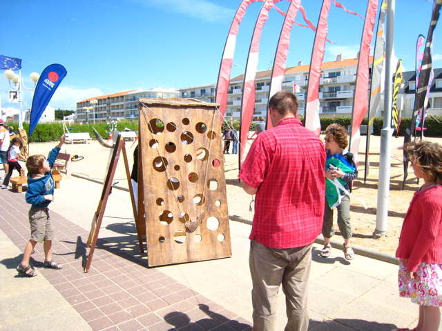
Pour celui-ci, il faut monter le palet rond en évitant les trous avec les 2 lignes reliées à la balancelle de forme un peu creuse, mais pas trop...

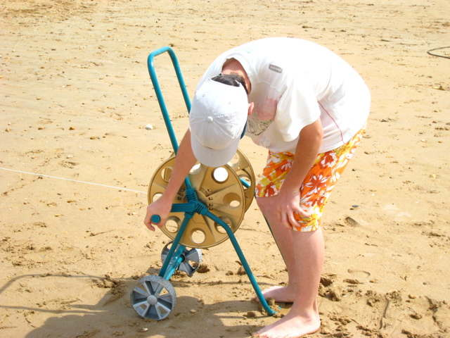
Un fondu a lancé un cerf-volant, un quadri-cellulaire avec de petites ailes, à... 1000 m ! Bravo, mais pour redescendre, il faut plus d'une heure ! Et comme il a mis des queues sur la ligne, ça tire d'enfer, faut être deux...

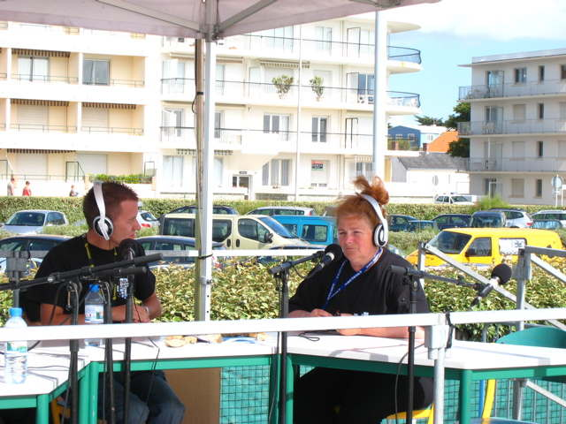
Sur la promenade, studio radio. Claudine y passe et raconte tout sur les ateliers de cerfs-volants pour enfants !

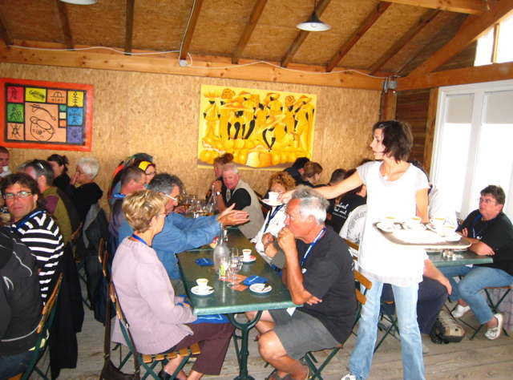
Tous les repas seront pris dans le restaurant sur la plage, pas trop loin à marcher, pas de voiture à déplacer...

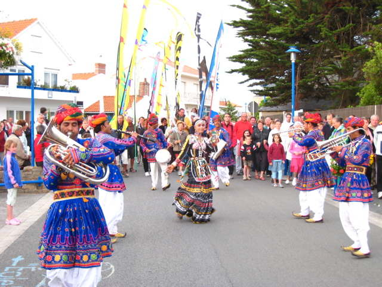
Ensuite, déambulation dans la ville avec bannières, au son d'une fanfare indienne pleine d'entrain. Une belle danseuse à la taille fine et très souple montrera ses talents et son splendide costume brodé d'or...

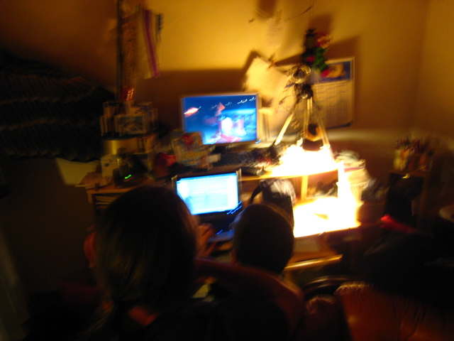
Et puis Michel Boucard nous invite à un pot chez lui. Pot généreux, on ne manquera pas de boissons diverses dont plusieurs saladiers de punch. Heureusement, la plupart sont venus à pied... Les ordinateurs rougissent pour se montrer et s'échanger les photos de la journée...

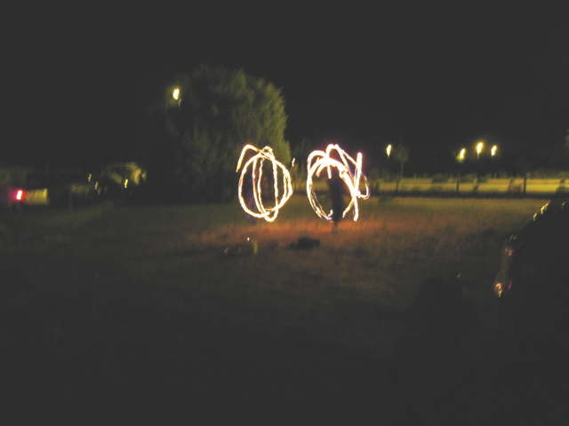
Dans le jardin, deux jongleurs (cervolistes ?) font tournoyer en tous sens des boules de feu !

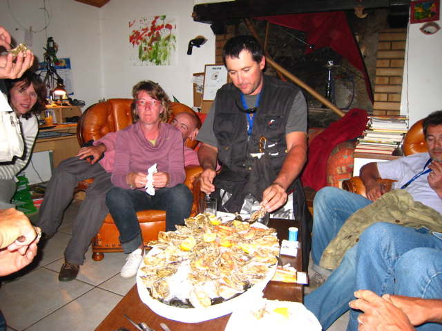
Pour soutenir les invités, plateau d'huîtres et de crevettes. Un vrai plateau sérieux. On finit quand même par le liquider... Alors Michel en amène un autre aussi grand !

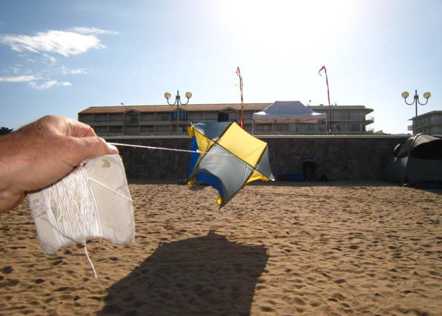
Après un coucher un peu tardif (3 h et demie pour certains m'a-t-on dit ?), lever dimanche matin. Le vent est déjà costaud (35 km/h). Ma tente a très envie de voler, et il faudrait peu de modifs pour qu'elle monte bien !

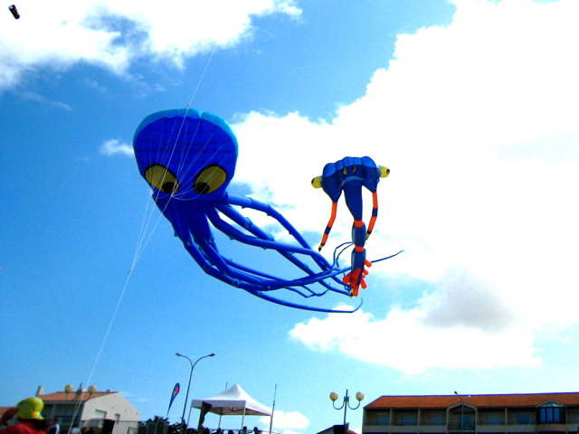
On revoit le flow-form (si on peut garder ce nom...) pilotable... Il flirte honteusement avec la pieuvre bleue !

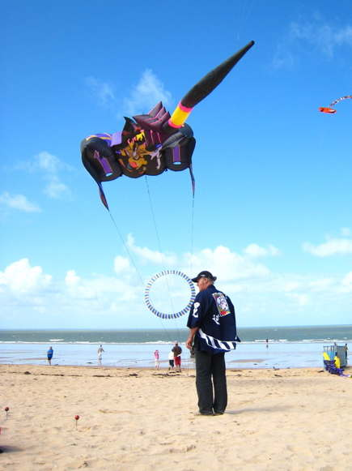
Claude a sorti un de ses magnifiques cerfs-volants celtes, mais faute de place, à 10 m de haut et sans ses longues queues !

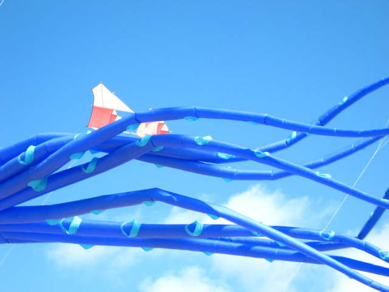
On verra en l'air plusieurs grandes pieuvres, dont une de 40 m, qui se plaisent dans ce vent et agitent majestueusement leurs tentacules !

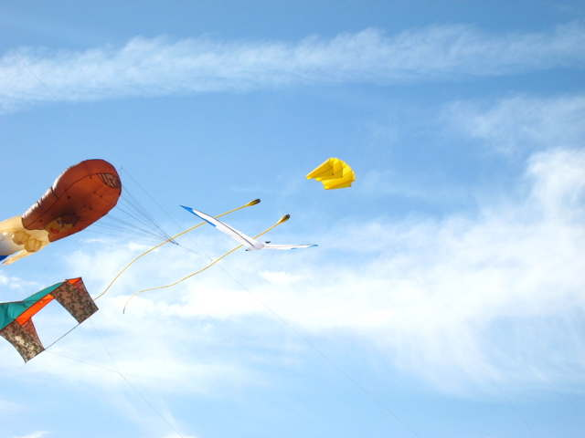
Mon Albatros revolera jusque vers 17 h et 45 km/h où je le rentrerai sagement, pour le remplacer en plus modeste par mon Rokkaku...

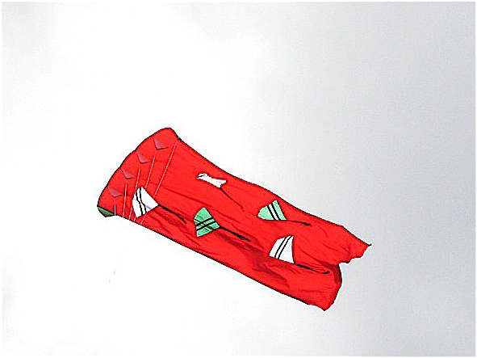
On revoit aussi ce cerf-volant monopeau, de quelqu'un de Vierzon, je crois ! Une simple toile avec de petites dérives à l'avant... et ça vole très bien !

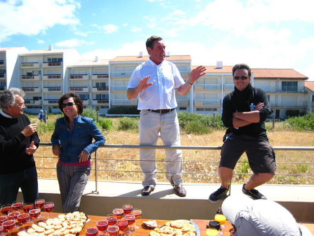
Apéritif municipal au Point Bateaux, avec discours du Maire, simple et naturel, apparemment conquis par les cerfs-volants et qui ne souhaite que la croissance du festival !

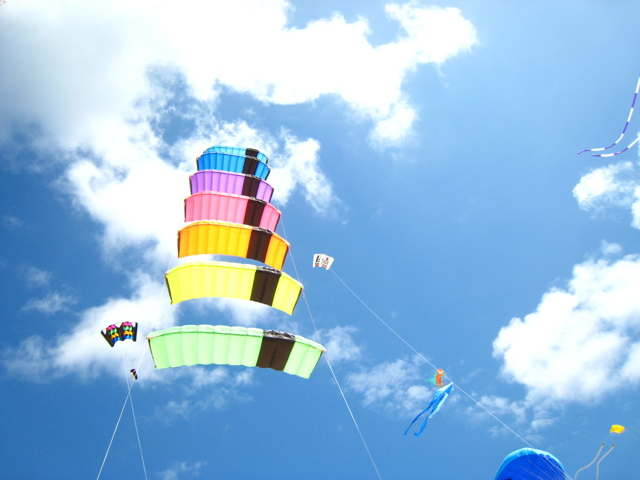
Les Impossible trouvent que les flexis, ça tire trop pour une démo de pilotable. Alors ils les ont tous attachés en train avec 2 points fixes et ils sont d'une stabilité exemplaire.

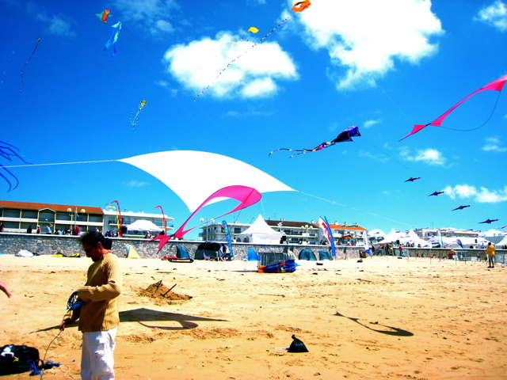
Zézé monte au-dessus de ses poissons un joli petit toit à 3 points d'attache qui ne bougera pas de l'après-midi...

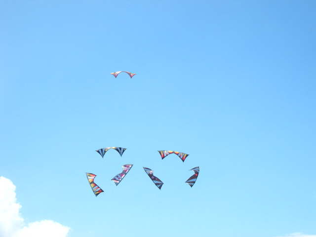
Les Flics ont reçu le renfort de l'équipe de Saint-Brévin et s'exercent aux figures les plus diverses quand ils ne jouent pas avec les spectateurs sur la promenade !

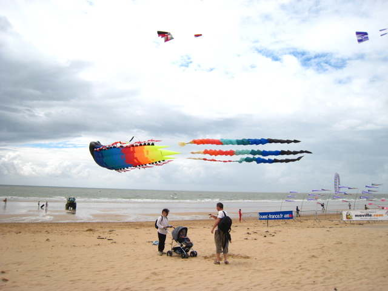
On verra aussi un trilobyte amarré à deux tracteurs, il faut ce qu'il faut...

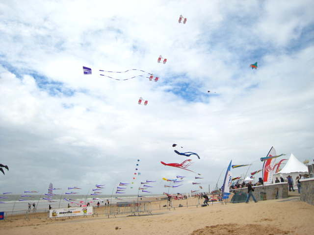
Dimanche en fin d'après-midi, le vent est vraiment monté et il y a de moins en moins de cerfs-volants en l'air...

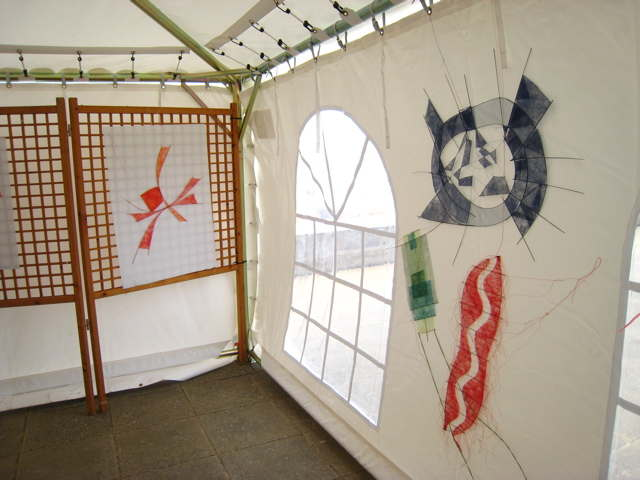
Sur la promenade, animations. Thérèse a un stand d'exposition consacré tout entier à ses oeuvres.

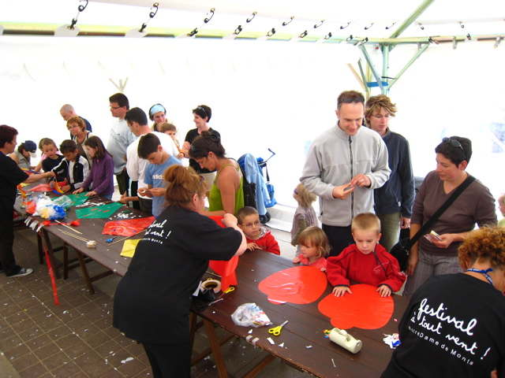
Le CVCCeltique fait fonctionner un atelier de construction de cerfs-volants pour enfants qui travaillera beaucoup ce dimanche...

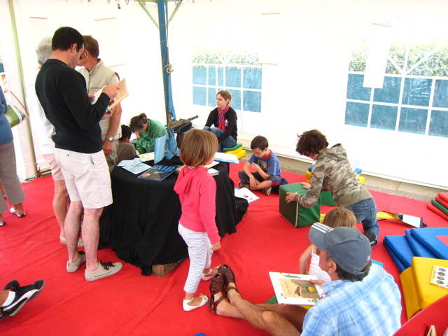
On trouve aussi un stand de livres sur la nature pour petits et grands, avec des jeux (quel insecte a quelles ailes ?) !

Je partirai lundi matin, temps pluvieux. Je passe devant le seul le vrai Jardin du Vent, marque déposée. Mais évidemment, il faut payer pour en voir plus. Mais je n'ai jamais vu les ailes sur le moulin, à part sur le dépliant publicitaire...

Dans mon périple, je prends une route où le Tour passera demain (heureusement pas aujourd'hui, veine !)... Les deux côtés sont déjà bordés de camping-cars acrobatiquement stationnés...
Notre-Dame-de-Monts : Un temps pas trop mauvais à part quelques gouttes de pluie dimanche, et du vent solide. L'accueil est généreux, tous les repas et p'tits-déjs fournis, logement assuré ! Pas trop d'apéros, ça change et c'est finalement pas mal (pour mon foie en tout cas !). Je reviendrai !